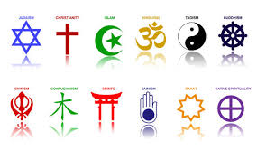

What is a symbol
What is a symbol
A symbol is a sign that can mean a religion or word. If symbol in a sequence
combined then there is a new meaning e.g. words or year 2025 The letters and numbers are also symbols.
Working symbols - : / ( ) = ? . + " * % & §, £$, abcdefghijkmnopqstwvyz , 0123456789
Religious symbols e.g.:Chai

Languages
Русский
Українська
Deutsch